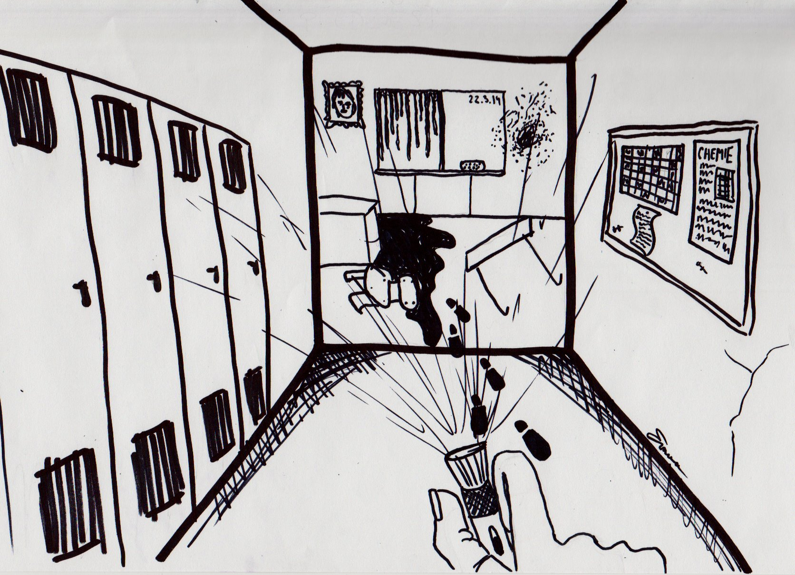

« předchozí článek | obsah čísla | následující článek »
Hrobové ticho ovládá chemickou laboratoř. Světla pouličních lamp pronikají vysokými okny do místnosti, v níž jejich odraz narušují zářivky. Tři studenti, sedíce v hloučku, usilovně dokončují zadanou práci.
„Vyšlo vám to stejně?“ ptá se černovláska svých spolužáků. Unaveně si prohrábne dlouhé vlasy a vydechne. Společně s dvěma chlapci sedí na dřevěných lavicích a nepřítomně hledí střídavě do notebooku a do několika papírů.
„Jo, mně jo, co tobě?“ obrátí se modrooký, dvacetiletý mladík na svého kamaráda, jenž souhlasně pokývá hlavou.
„Taky. Skvělý,“ oddechne si, odhodí propisku a opře si hlavu o opěradlo lavice.
„Tak jo, konečně můžeme jít domů, doufám, že bude ten prudič spokojenej,“ odsekne znaveně dívka a zakroutí hlavou.
„Taky doufám, jestli ne, tak mu to omlátím o hlavu,“ vyhrožuje naštvaně jeden z chlapců.
Jeho přátelé se potutelně ušklíbnou. „Vytiskneme to, zanesu mu to a půjdem. Kolik je vůbec hodin?“ otáže se.
„Ty vole, půl desáté.“ Zděsí se dívka a schovává mobil zpět do kapsy od džínů.
„Já to balím, jdeme, ne?“ vyhrkne chlapec v očekávání souhlasu.
Tři přátelé si balí své počítače a další věci do batohu a hlasitě se smějí. Poklidnou noc, zdá se, by nemělo nic narušit.
„Tak jo, zhasínám, máte všechno?“ zeptá se dívka s rukou položenou na vypínači. Jakmile zhasne a zavře dveře, společně s přáteli se ohlédne do dlouhé, potemnělé chodby. Nízký strop, úzký prostor a zastaralé, dřevěné, polorozpadlé vestavěné skříně a úschovny působí strašidelně. Nepravidelně blikající zářivky tísnivou atmosféru ještě podtrhují. Dívka naprázdno polkne.
„Nikdy jsem si neuvědomila, jak to tu je děsivý,“ zasykne třesouc se.
„Ty jsi strašpytel,“ utahuje si z ní vysoký, hubený blonďák a posměšně se zasměje.
Černovláska nechá jeho ironickou poznámku bez odezvy.
„Tak já mu to jdu zanést, jděte k východu, doženu vás,“ navrhuje modrooký muž.
Chlapec s dívkou souhlasí. V jedné z chodeb se rozdělují. Jakmile stojí blonďák s kamarádkou u vrat, jež vedou do další chodby s východem ze školy, nervózně přešlapují.
„Kde je? Jestli tam profesor není, tak snad na něj nečeká,“ hlesne naštvaně blonďák. „Jdu za ním, aby šel. Nebudeme na něj čekat.“
„Jdu s tebou,“ přidává se dívka.
„Bojíš se, co?“ utahuje si z ní.
Dívka se mlčky zamračí. Jakmile oba vyjdou po schodech do třetího patra, spatří, že chodbu, ze které před chvíli vycházeli, ovládla tma. Blikající zářivky zřejmě už doblikaly.
„Kde je ten Ondřej?!“ odfrkne nervózně blonďák.
„Třeba potkal profesora a společně někam šli,“ snaží se ho uklidnit černovláska, která nejistě přešlapuje na místě.
Muž nechá její poznámku bez odpovědi a vydá se černočerné chodby. Dívka ho neochotně následuje. Po pár krocích se nejistě ošívá. Zastaví se a přešlapuje na místě.
„Co to děláš?“
„Necítíš na zemi něco vylité?“ svraští obočí a pohlédne na zem.
„Ty vole, co to je?“ špitne nechápavě a snaží se neznámou tekutinu smýt z podrážek.
Vysoký blonďák poklekne a třímá tekutinu mezi prsty.
„Kurva,“ zařve a šokovaně odstupuje několik kroků do prostoru. „To je krev.“ Znechuceně si otírá prsty o zeď. V mžiku sundává batoh a začne v něm něco hledat. Po chvíli vytahuje svazek klíčů, na nichž má připevněný malý laser. Nastaví dívce ruku, která se jí chytne a posvítí do chodby. Oba přátelé ruku v ruce následují bílé, nejasné světlo.
„Pane Bože,“ vykřikne zděšeně dívka a odvrací se. Ruce si dá před pusu, neboť jí je na zvracení.
„Ježíši Kriste,“ vyhrkne s hrůzou v očích blonďák, jakmile oba spatří na zemi mrtvé tělo svého přítele v kaluži krve.
„Nechoď k němu,“ uchopí dívka chlapce za paži a s pláčem se ho snaží zastavit.
Ten jejich rad nedbá a dojde blíže k příteli. Dívka ho nenásleduje. I on se nyní znechuceně odvrací a naprázdno polkne.
„Ondro, Ondro, proboha, co se mu stalo?“ táže se černovláska a chystá se k tělu přiblížit.
„Zůstaň tam,“ zastaví ji přítel, „má podřezané hrdlo,“ špitne a opět polkne.
Dívka dál zaraženě stojí. Zrychleně oddechuje a snaží se zachovat si chladnou hlavu.
„Co budeme dělat? Musíme zavolat policii.“
„Ne,“ přistoupí k ní vysoký muž, „žádná policie. Budeme hlavní podezřelí,“ posvítí jí do obličeje. „Jdeme pryč,“ uchopí ji za ruku.
„Musíme zmizet.“
„Ale co Ondra? Nemůžeme ho tu tak nechat?“ vyšiluje hystericky v slzách černovláska.
„Teď už mu nepomůžeme,“ odsekne chlapec a pohrdavě si odfrkne. „Poslouchej, nic jsme neviděli, rozumíš? Ať to udělal kdokoliv, ještě tu někde je, chceš být další a čekat, až se ti stane to stejné?“ pohlédne jí s vyděšeným výrazem do zelených očí.
Dívka si utře slzy, přestože jejich proud nemůže zastavit a souhlasně, ač neochotně pokývá. Chlapec ji pohladí po vlasech.
„Super, tak jdeme.“
Vezme přítelkyni za ruku a svítíce si laserem na cestu zděšeně prchají k východu. Jaké je jejich překvapení, když vrata z tvrzeného skla, kterým před chvíli prošli, jsou zamčená.
„Do hajzlu,“ zařve blonďák a vztekle jimi škube.
„Bože, my tady umřeme, někdo nás zabije, my tady zdechnem,“ propadá hysterii dívka. Úděsný výraz v její tváři podtrhuje vodopád slz. Zaboří prsty do rozcuchaných vlasů a sesype se na zem. Blonďák se k ní skloní.
„Diano, podívej se na mně, uklidni se. Neumřeme tady. V téhle části se nachází sklad nářadí, jdeme tam a najdeme něco, čím se dají ty dveře rozbít, rozumíš? Uklidni se, to bude dobrý,“ pokouší se přítelkyni uklidnit.
Černovláska, sice nepřesvědčená jeho výroky, souhlasí. Blonďák vyzve přítelkyni a společně se vydají do přízemí. Jak smyslů zbavení sbíhají co nejrychleji po schodech tři patra. Muž se pokouší temné chodby alespoň trochu osvítit laserem. Dívka, ačkoliv přítele následuje, myslí na vraha, který tak bezcitně zbavil jejich přítele života. Jakmile oba stojí před oprýskanými dveřmi s nápisem „Sklad“, vytrhne blonďák z popruhu hasicí přístroj a snaží se jím rozbít kliku od vrat. Podaří se. Posvítí dovnitř.
„Na, vezmi si to,“ podává dívce železnou lopatu na sníh a sám si bere krumpáč.
„Proč mi to dáváš?“ ptá se nechápavě Diana. „Tímhle chceš rozbít tvrzené sklo?“
Její přítel jí věnuje mrazivý pohled pln děsu a nenávisti. Dívka pochopí, že na dveře to nářadí nemají. Opatrnými kroky procházejí dveře za dveřmi. Černovláska pomalu následuje vysokého blonďáka, a společně prohledávají místnost po místnosti. Další učebna, další a další. V každé z nich se může skrývat nebezpečný vrah a oni, místo aby se schovali, jdou na něj s lopatou a krumpáčem. Nyní prohledávají učebnu, ve které nedávno ještě všichni tři pracovali na společném projektu.
„Počkej tady, je to poslední učebna na tomhle patře. Hlídej chodbu,“ přikáže ji blonďák a sám s laserem v puse vstupuje do chemické laboratoře.
Dívka pevně svírá zpocenými, třesoucími se dlaněmi lopatu a je připravena zaútočit. Obezřetně kroutí hlavou. Dokud vidí pohybující se světlo laseru, ví, že její přítel je v pořádku.
„Radku, co tam děláš tak dlouho?“ zasykne. „Radku?“ nahlédne do černočerné místnosti. Kapky potu jí smáčejí obličej, srdce cítí až v krku. Končetiny má ztuhlé, nedokáže se pohnout.
„Radku, jsi tam?“ křikne do laboratoře. S obranným postojem opatrně vstupuje dovnitř. Před sebou drží lopatu, ačkoliv nevěří tomu, že by ji zachránila. „Radku, to není sranda, ozvi se.“ Náhle do něčeho kopne, co se kousek odkutálí pryč. Diana se opatrně shrbí a rukou hmatá po zemi. Na zemi leží Radkův laser. Dívka zrychleně dýchá. „To ne.“ Třesoucí dlaní posvítí před sebe, když ze sebe vydá smrtelný výkřik děsu. Natolik šokovaná a k smrti vyděšená upustí laser, který zmizí neznámo kam. Na jedné z lavic spatří Radkovo probodnuté zakrvácené tělo. Proud krve kape na nové linoleum. Diana odhodí lopatu a klopýtavě vystupuje z místnosti. Zastaví ji až vestavěné dřevěné skříně na chodbě, o které se opře a zhroutí na zem. Propuká v lítostivý, děsivý, hysterický pláč. Objímá si paže a smířená s krutým osudem sedí na studené zemi.
„Proboha, ne. Co se to děje. Kdo je to? Kdo to udělal? Teď jsem na řadě já, proboha. Pane Bože,“ koktá zrychleně, sotva popadá dech. Náhle její přerývané nářky přerušují pravidelné kroky, které se k ní blíží zleva. Dívka okamžitě umlkne. Vytřeští oči a pohlédne doleva. Co nejtišeji se plazí po zemi co nejdále od doléhajících kroků. Zády však narazí na zamčená dřevěná vrata, jež z druhé strany spojují druhé a třetí patro. Diana se přitiskne k vratům. Kolena si přitáhne k hrudi a kníkavě naříká. Ze tmy se náhle vynoří mužská zavalitá postava. Diana pozvedne zrak.
„Profesore, proč?“ špitne. V jeho ruce spatří zakrvácený nůž.
„Proboha, uf…byl to jen sen…byl to jen sen….,“ oddechuje černovláska v posteli. Otře si zpocené čelo a posadí se. „Pane Bože, to byl humus. Uf…Diano, uklidni se, byla to jen odporná noční můra. Už dobrý,“ říká si pro sebe. Vstane a zamíří do koupelny.
Už z tramvaje vidí před školou stát plno blikajících policejních světel. Svraští obočí. Jakmile tramvaj zastaví, dívka vybíhá z vozu a zvídavě zamíří ke vchodu do školy. Policisté odmítají dovnitř kohokoliv pustit. Profesorský sbor i studenti postávají venku za policejními zátarasy. Většina z nich hystericky brečí.
„Kristo, co se děje?“ otáže se černovláska své přítelkyně, kterou přes dav vyšilujících lidí našla.
„Ach Diano,“ vyhrkne plačtivě a dívku obejme. Diana jí objetí opětuje, avšak nemá ponětí proč. „Ty to ještě nevíš?“ táže se Kristýna.
„Co mám vědět?“
„Radek s Ondrou…,“ začne. Slzy se jí opět derou do očí, „oni…oni jsou mrtví,“ vyhrkne a nový proud slz utře do promočeného kapesníku.
„Co? Co to povídáš? Co se stalo?“ šokovaně se zeptá Diana a odstupuje od kamarádky.
„Včera v noci tu zůstali a dodělávali něco do chemie. On…on je zabil,“ sykne a utře si tváře. Vypadá, jakoby se měla každou chvíli zhroutit.
„Kdo?! Kdo je zabil?“ křikne černovláska a s přítelkyní zatřese. „Tak mluv!“
„Profesor Nowak. Jednoho podřízl a druhého probodl,“ vykoktá, „ sám se pak v kabinetě zastřelil.“
Dívka se šokem v obličeji vystupuje z davu. Zhroutí se na zem a vkládá obličej do dlaní. Hlavou ji proletí jediná slova.
„Ten sen…měla jsem jít s nimi, ale nešla jsem. Měla jsem tam s nimi umřít."
„Vy jste slečna Moranová?“ uslyší nad sebou přísný, mužský hlas. Diana zvedne hlavu, utře slzy a nejistě upře zrak na vysokého, nemilosrdně vyhlížejícího asi čtyřicetiletého muže, v obleku a dlouhém kabátu, jenž si ji zkoumavě prohlíží. Diana se postaví a pokývá.
„A...ano,“ odvětí přerývaně s notnou dávkou nejistoty.
„Jsem komisař Ritý. Mám na vás pár otázek. Pracovala jste s profesorem Nowakem a těmi dvěma mrtvými?“ pokračuje stejně přísně muž.
„Ano.“
„Pojďte se mnou,“ vyzve ji a bez jediného náznaku zájmu se otočí s rukama v kapsách.
Vystrašená černovláska jej nechápavě následuje. Cítí na sobě nechápavé pohledy všech přihlížejících zvědavců.
Diana se náhle ocitá v profesorově kabinetu pouze s pohrdavě vyhlížejícím komisařem Ritým. Jeho muži stojí přede dveřmi a mají přísný zákaz kohokoliv pouštět dovnitř. Diana, ač překvapená a vyděšená, nedokáže přestat myslet na svůj dnešní sen. A byl to jenom sen.
„Na čem jste s profesorem pracovali?“ táže se a zapálí si cigaretu.
„Na svých diplomových pracích,“ špitne dívka sedíc v nepohodlném rozsedlém křesle.
„Co bylo jejich obsahem?“ uhodí na ni. Diana svraští obočí a odtáhne se.
„Co to má společného se smrtí mých přátel?“ naštve se a zamračí. Nechápe, kam svými otázkami ten nepříjemný chlap směřuje. Komisař tipne cigaretu a zašklebí se.
„Prý jste studovali genetiku a od kolektivu jsem slyšel, že profesor byl tak trochu podivín,“ objasňuje, čeho se jeho otázka týká. „Vy tři jste prý byli nejlepší a často s vámi probíral i své soukromé výzkumy, nemýlím-li se.“
Dianu rozčiluje jeho přílišná sebejistota. Netuší, odkud tohle ví, ale zapírat nemělo cenu.
„Jsem snad podezřelá nebo co?!“ zvýší hlas. „V noci jsem byla doma, mám na to svědky,“ obhajuje se a zároveň se snaží odejít od tématu.
„Nejste podezřelá,“ uchechtne se, očividně pobaven dívčinou horlivostí. „Chci vědět, na čem jste pracovali. Znáte od toho kód?“ uhodí na ni se zlověstným výrazem v očích a ukáže na malý, ocelový sejf, v rohu místnosti.
Diana naprázdno polkne. Pokouší se udržet si kamennou tvář a nadále předstírat, že o ničem nemá tušení. Záporně zakývá. Komisař sklopí hlavu a unaven dívčinou viditelně hranou naivitou vyjde z kabinetu. Jakmile se za dívkou zavřou dveře, přiskočí k sejfu a bez sebemenších problémů zadá desetimístný číselný kód. Ocelová dvířka se otevřou. Diana se horlivě přehrabuje horou dokumentů, až najde ten pravý. Letmo jej očima přečte.
Pokus 25. Dnes mi není dobře. Včerejší dávka ve mně vyvolala nepředvídatelné reakce. Celé tělo zachvátily nesnesitelné křeče a pot, jenž doslova štípal. Na chvíli jsem ztratil vědomí. Nemám ponětí na jak dlouho, ale jakmile jsem se probudil, vše kolem mne bylo zničeno. Předpokládám, že jsem to udělal já, v záchvatu náhlého nevědomí a duševního rozpolcení. Zbytek dne se nic nestalo. Do příštího pokusu přidám více séra zn. XY257.
Nevím, kolik pokusů ještě musím provést, ale věřím, že jednou lék na rakovinu získám.
Pokus 26. Mé předpoklady byly špatné. Jsem od svého cíle dál, než jsem si myslel. Všechno je špatně. Po přidání séra XY257 jsem sice vědomí neztratil, ale stalo se něco mnohem horšího. Mou mysl a tělo zachvátila náhlá neočekáváná brutalita, kterou jsem musel ukojit. Nyní jsem se nespokojil pouze s ničením, ale uchýlil jsem se k dvojnásobné vraždě. Bože, to jsem nebyl já. Zabil jsem je oba, aniž bych to chtěl. Nedokázal jsem ovládat své konání. Cítil jsem se uvězněn ve vlastním těle, které žije vlastním životem. Jak bych dokázal s pocitem viny žít? Bože, odpusť. Chtěl jsem jen lidem pomáhat, ne je zabíjet. Sérum XY257 musí být zničeno a já zapomenut. Jestli tyto řádky budeš číst, Diano, neboť ty a ti chlapci jste jako jediní znali kód k otevření sejfu, znič ten ďábelský lék a s ním i tento dokument. Nikdo se nesmí dovědět, na čem jsme pracovali. Zničil jsem život sobě i tvým přátelům. Nedovol, abych ho zničil i tobě. Sbohem a ještě jednou, prosím, všechno znič.*